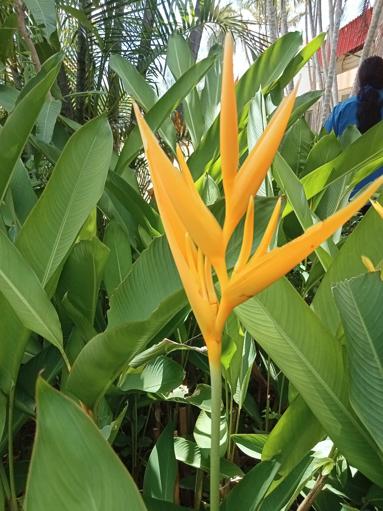

พุทธรักษาญี่ปุ่น
พุทธรักษาญี่ปุ่น
ประวัติความเป็นมา
พุทธรักษาญี่ปุ่น, ธรรมรักษา หรือ พุทธรักษาเยอรมัน มีชื่อวิทยาศาสตร์ว่า Heliconia psittacorum[2] เป็นพืชหลายปี (perennial plant) ชนิดหนึ่งที่มีถิ่นกำเนิดในภูมิภาคอเมริกาใต้และแคริบเบียน
พุทธรักษาญี่ปุ่นใช้ปลูกเป็นไม้ดอกไม้ประดับสวยงามและเป็นสิริมงคล เพราะชื่อของต้นไม้ชนิดนี้ที่เรียกอีกอย่างหนึ่งว่า "ธรรมรักษา" นั้น มีความหมายไปในทางที่ดี นั่นคือ ธรรมรักษาหรือธรรมะนั้น คือการรักษาในสิ่งที่ดีงาม
รายละเอียดพืชพันธ์ุ
พุทธรักษาญี่ปุ่น เป็นพืชล้มลุกข้ามฤดูหรือหลายฤดู ถิ่นกำเนิดในภูมิภาคอเมริกาใต้ แลแคริบเบียน มีรายงานว่าสามารถขยายพันธุ์ได้เองในธรรมชาติในหลายประเทศ รวมทั้งประเทศไทย สูงประมาณ 0.6–2 เมตร ขยายกอเป็นวงกว้างอย่างรวดเร็ว ลำต้นใต้ดินแบบเหง้าคล้ายขิง ส่วนเหนือดินเรียกว่า ลำต้นเทียม ประกอบด้วย กาบใบเรียงซ้อนสลับกันคล้ายกาบกล้วย ใบมีลักษณะคล้ายใบกล้วย ลักษณะของกอแบ่งออก เป็น 2 ลักษณะคือ กอแน่น กอลักษณะนี้ เหง้าจะมีข้อชิดกันทำให้หน่อใหม่เกิดชิดโคนต้นเดิมจึงทำให้กอมี ลักษณะแน่น กอขยายกว้าง กอลักษณะนี้เหง้าจะมีข้อห่างกันทำให้หน่อเกิดใหม่เกิดห่างต้นเดิมกอขยายกว้าง อย่างรวดเร็ว